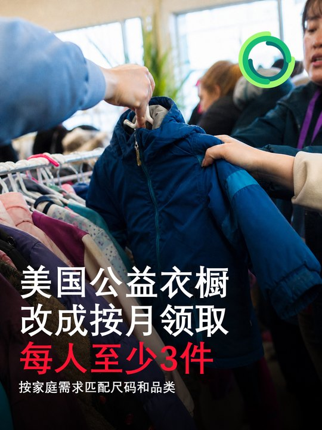
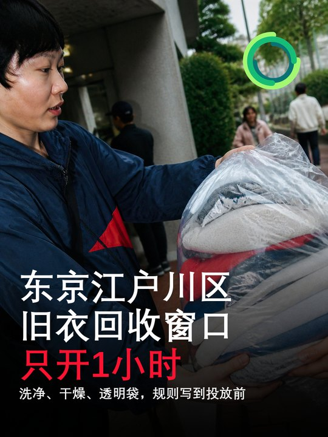

最近24—72小时没有出现足以改变旧衣回收行业格局的新政策、重大融资或大型产能项目。可核实的新信号集中在消费端入口：东京江户川区继续以“固定地点、固定一小时、明确接收清单”的方式组织家庭旧衣旧布回收；美国明尼苏达州公益机构 IOCP 从8月3日起调整免费衣物服务，让符合条件的家庭按月获取必需衣物。对铛铛一下而言，今天最值得吸收的不是活动规模，而是两种运营方法：把投放规则写到足够具体，以及把捐赠端与按需再分配端连成可持续服务。
总结今日结论

美国IOCP把免费衣物服务改为按月、按需领取
IOCP把免费衣物服务改为按月、按需领取
- 发生日期： 2026年8月3日起
- 国家/地区： 美国明尼苏达州普利茅斯及服务区域
- 事实摘要： Interfaith Outreach & Community Partners（IOCP）官网公布，从8月3日起，其客户可在获得工作人员转介后到 The Shop 免费领取家庭所需衣物。服务按月开放，覆盖男女及儿童衣物；公开规则显示每人每月至少可获得三件，鞋类视库存而定。页面没有公开同期捐赠量、库存周转率或单件处理成本。
- 产业链环节： 捐赠接收、筛选、库存、公益再穿着与需求匹配。
- 影响判断： 中等重要性、再分配运营信号。 它不是商业二手平台或大规模回收项目，但把公益衣物从一次性领取改为按家庭需要持续供给，有助于提高可穿衣物的实际使用率。
- 与铛铛一下的关联： 可在公益合作中引入“家庭需求表＋尺码信息＋月度领取额度”，同时记录上架率、匹配率、领取率和30天未流转率，避免公益衣物只完成捐赠、不完成再穿着。
- 原始来源： IOCP Clothing Program
政策政策法规与标准
本检索窗口内，中国、美国、欧洲与日韩暂无经官方确认、且直接改变旧衣回收经营规则的重要新增法规或标准。江户川区项目属于既有地方回收安排的当期执行，IOCP属于机构服务调整，均不是强制性政策。
资本资本、并购与项目建设暂无重要新增
暂无重要新增。 ThredUp已预告将在美国市场8月5日收盘后发布2026年第二季度结果；截至本日报采编时点，结果尚未发生，暂不写入事实性财务结论。
建议对铛铛一下的影响与可执行建议
- 把投放规则写成现场可执行清单。 用照片或图标明确干湿、污染、大件、鞋包、床品和商业来源边界，并在下单前完成确认。
- 为公益去向建立需求匹配台账。 至少记录品类、尺码、季节、接收机构需求、实际领取和未流转原因，避免把“捐出”直接等同于“被使用”。
- 测试固定短时社区窗口。 在居民集中时段设置60—90分钟有人值守的回收点，对比回收柜的单位成本、污染率、咨询量与有效投放率。
- 公开四个结果指标。 回收重量、可再穿比例、实际再穿件数和进入材料化利用重量；无法确认去向的部分单列，不用笼统“循环利用”覆盖。
速览今日最值得关注的四条变化
- 【中】东京江户川区继续运行“一小时旧衣旧布回收窗口”。 8月4日13:00—14:00，居民可免费投放洗净、干燥的旧衣和部分家纺；官方同时公开了不可接收品类和投放限制。
- 【中】美国 IOCP 免费衣物服务从8月3日起改为按月领取。 符合服务区域与转介条件的家庭可按月获得必需衣物，每人至少三件，体现捐赠衣物从“收进来”向“按需要分配”的运营转向。
- 【低—跟踪】Textile Exchange 2026摄影征集于8月2日截止。 本届主题把再生、再利用与纺织循环故事纳入行业传播，但它属于传播活动，不代表新增回收产能或技术落地。
- 【观察】中国、欧洲、韩国及资本、价格、贸易端暂无重要新增。 本检索窗口内未发现由权威来源确认且达到日报门槛的变化，不用旧闻补齐栏目。
欧洲暂无重要新增
欧洲在纺织品EPR、未售服装、分类收集、品牌回收和纤维再生方面暂无重要新增。8月2日结束的 Textile Exchange 摄影征集属于行业传播节点，不应解释为政策或产业化进展。
品牌品牌、平台与竞品
本检索窗口内暂无重要品牌回收、平台交易或竞品扩张新增。IOCP案例的价值在于需求匹配与库存运营，不宜与商业二手平台GMV或交易规模直接比较。
贸易价格、供需、贸易与渠道暂无重要新增
旧衣收购价、分拣料价格、再生纤维价格、二手出口量和主要贸易规则方面暂无重要新增。IOCP的按月领取规则提供了需求端观察入口，但页面没有公开库存与领取数据，不能据此推断区域供需变化。
跟踪值得持续跟踪的信号
- IOCP是否公开按月领取后的服务人数、库存周转、缺码率和捐赠需求变化。
- 江户川区固定一小时窗口的实际回收量、误投率，以及是否扩展到更多场馆或更长时段。
- ThredUp在美国市场8月5日收盘后发布的二季度收入、活跃买家、订单与盈利变化。
- Textile Exchange摄影征集8月12日公布的入围内容，是否出现可供品牌学习的旧衣回收结果披露方法。
中国暂无重要新增
本检索窗口内，中国在旧衣投放、分拣、消毒、仓储、物流、二手流通、纤维再生、项目建设与贸易渠道方面暂无重要新增。

日本东京都江户川区江户川区以固定一小时窗口回收家庭旧衣旧布
江户川区以固定一小时窗口回收家庭旧衣旧布
- 发生日期： 2026年8月4日13:00—14:00
- 国家/地区： 日本东京都江户川区
- 事实摘要： 江户川区环境部清扫课在综合体育馆射箭场前设置免费回收点，无需预约。官方要求旧衣旧布洗净、保持干燥并装入透明或半透明袋；接收一般旧衣以及毛巾、毛毯、被套等旧布，不接收泥油污染品、玩偶、毛线团及边长超过30厘米的地毯、床垫和被褥；仅限家庭来源，不能驾车或在指定时段外投放。该地点按月设置一次一小时窗口，8月4日是已公布日程中的一期。
- 产业链环节： 家庭投放、前端分类与回收点运营。
- 影响判断： 中等重要性、低成本投放信号。 窗口很短，规模也未公开，但规则高度具体，能降低湿衣、污染物和大件家纺进入后端的概率。
- 与铛铛一下的关联： 回收预约页应把“可收／不可收／包装方式／干湿要求／家庭或商业来源／是否可驾车”做成首屏清单；可测试社区固定短时窗口，并比较其单位人力回收量与全天候回收柜的污染率。
- 原始来源： 江户川区旧衣旧布回收活动页
韩国在旧衣回收政策、品牌回收、二手平台、分拣技术与大型项目方面暂无重要新增。
技术技术、材料与循环创新暂无重要新增
暂无重要新增。 未发现最近24—72小时内由权威来源确认、且公开了材料适用范围、处理效率、能耗或量产状态的新技术。Textile Exchange“Fashion Regenerated”摄影征集把再利用、再生材料和旧纺织品故事纳入传播，但不构成技术验证。
舆情舆情、消费者与公益
今天两个有效信号都发生在消费者接触面。江户川区通过具体的接收与拒收规则降低误投；IOCP通过转介、尺码和每月领取机制提高衣物与家庭需求的匹配度。两者共同说明：公众回收项目的可信度不只来自“方便”，也来自规则透明、去向可解释和后续服务可持续。
来源来源清单
- 江户川区｜综合体育馆旧衣旧布回收：https://www.city.edogawa.tokyo.jp/event/08sogotaiikukan.html
- IOCP｜Clothing Program：https://iocp.org/outreach-services/clothes/
- Textile Exchange｜2026 Photography Competition：https://textileexchange.org/photography-competition/
- ThredUp Investor Relations｜Q2 2026 results announcement：https://ir.thredup.com/news-releases/news-release-details/thredup-report-second-quarter-2026-financial-results-august-5